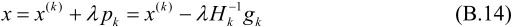

f(x(k))是f(x)的梯度向量在点x(k)的值，H(x(k))是f(x)的海赛矩阵（Hesse matrix）
f(x(k))是f(x)的梯度向量在点x(k)的值，H(x(k))是f(x)的海赛矩阵（Hesse matrix）附录B 牛顿法和拟牛顿法
牛顿法（Newton method）和拟牛顿法（quasi Newton method）也是求解无约束最优化问题的常用方法，有收敛速度快的优点。牛顿法是迭代算法，每一步需要求解目标函数的海赛矩阵的逆矩阵，计算比较复杂。拟牛顿法通过正定矩阵近似海赛矩阵的逆矩阵或海赛矩阵，简化了这一计算过程。
1．牛顿法
考虑无约束最优化问题
其中x*为目标函数的极小点。
假设f(x)具有二阶连续偏导数，若第k次迭代值为x(k)，则可将f(x)在x(k)附近进行二阶泰勒展开：
这里，gk＝g(x(k))＝f(x(k))是f(x)的梯度向量在点x(k)的值，H(x(k))是f(x)的海赛矩阵（Hesse matrix）
在点x(k)的值。函数f(x)有极值的必要条件是在极值点处一阶导数为0，即梯度向量为0。特别是当H(x(k))是正定矩阵时，函数f(x)的极值为极小值。
牛顿法利用极小点的必要条件
每次迭代中从点x(k)开始，求目标函数的极小点，作为第k+1次迭代值x(k+1)。具体地，假设x(k+1)满足：
由式（B.2）有
其中Hk＝H(x(k))。这样，式（B.5）成为
因此，
或者
其中，

用式（B.8）作为迭代公式的算法就是牛顿法。
算法B.1（牛顿法）
输入：目标函数f(x)，梯度g(x)＝f(x)，海赛矩阵H(x)，精度要求；
输出：f(x)的极小点x*。
（1）取初始点x(0)，置k＝0
（2）计算gk＝g(x(k))
（3）若||gk||<，则停止计算，得近似解x*＝x(k)
（4）计算Hk＝H(x(k))，并求pk
（5）置x(k+1)＝x(k)+pk
（6）置k＝k+1，转（2）。
步骤（4）求pk，，要求，计算比较复杂，所以有其他改进的方法。
2．拟牛顿法的思路
在牛顿法的迭代中，需要计算海赛矩阵的逆矩阵H-1，这一计算比较复杂，考虑用一个n阶矩阵Gk＝G(x(k))来近似代替。这就是拟牛顿法的基本想法。
先看牛顿法迭代中海赛矩阵Hk满足的条件。首先，Hk满足以下关系。在式（B.6）中取x＝x(k+1)，即得
记yk＝gk+1-gk， k＝x(k+1)-x(k)，则
k＝x(k+1)-x(k)，则
或
式（B.12）或式（B.13）称为拟牛顿条件。
如果Hk是正定的（也是正定的），那么可以保证牛顿法搜索方向pk是下降方向。这是因为搜索方向是pk＝- gk，由式（B.8）有
gk，由式（B.8）有

所以f(x)在x(k)的泰勒展开式（B.2）可以近似写成：
因正定，故有。当为一个充分小的正数时，总有f(x)<f(x(k))，也就是说pk是下降方向。
拟牛顿法将Gk作为的近似，要求矩阵Gk满足同样的条件。首先，每次迭代矩阵Gk是正定的。同时，Gk满足下面的拟牛顿条件：
按照拟牛顿条件选择Gk作为的近似或选择Bk作为Hk的近似的算法称为拟牛顿法。
按照拟牛顿条件，在每次迭代中可以选择更新矩阵Gk+1：

这种选择有一定的灵活性，因此有多种具体实现方法。下面介绍Broyden类拟牛顿法。
3．DFP（Davidon-Fletcher-Powell）算法（DFP algorithm）
DFP算法选择Gk+1的方法是，假设每一步迭代中矩阵Gk+1是由Gk加上两个附加项构成的，即
其中Pk，Qk是待定矩阵。这时，
为使Gk+1满足拟牛顿条件，可使Pk和Qk满足：
事实上，不难找出这样的Pk和Qk，例如取
这样就可得到矩阵Gk+1的迭代公式：
称为DFP算法。
可以证明，如果初始矩阵G0是正定的，则迭代过程中的每个矩阵Gk都是正定的。
DFP算法如下：
算法B.2（DFP算法）
输入：目标函数f(x)，梯度g(x)＝f(x)，精度要求；
输出：f(x)的极小点x*。
（1）选定初始点x(0)，取G0为正定对称矩阵，置k＝0
（2）计算gk＝g(x(k))。若||gk||<，则停止计算，得近似解x*＝x(k)；否则转（3）
（3）置pk＝-Gk gk
（4）一维搜索：求k使得
（5）置x(k+1)＝x(k)+kpk
（6）计算gk+1＝g(x(k+1))，若||gk+1||<，则停止计算，得近似解x*＝x(k+1)；否则，按式（B.23）算出Gk+1
（7）置k＝k+1，转（3）。
4．BFGS（Broyden-Fletcher-Goldfarb-Shanno）算法（BFGS algorithm）
BFGS算法是最流行的拟牛顿算法。
可以考虑用Gk逼近海赛矩阵的逆矩阵H-1，也可以考虑用Bk逼近海赛矩阵H。
这时，相应的拟牛顿条件是
可以用同样的方法得到另一迭代公式。首先令
考虑使Pk和Qk满足：
找出适合条件的Pk和Qk，得到BFGS算法矩阵Bk+1的迭代公式：
可以证明，如果初始矩阵B0是正定的，则迭代过程中的每个矩阵Bk都是正定的。
下面写出BFGS拟牛顿算法。
算法B.3（BFGS算法）
输入：目标函数f(x)，g(x)＝f(x)，精度要求；
输出：f(x)的极小点x*。
（1）选定初始点x(0)，取B0为正定对称矩阵，置k＝0
（2）计算gk＝g(x(k))。若||gk||<，则停止计算，得近似解x*＝x(k)；否则转（3）
（3）由Bk pk＝-gk求出pk
（4）一维搜索：求k使得
（5）置x(k+1)＝x(k)+kpk
（6）计算gk+1＝g(x(k+1))，若||gk+1||<，则停止计算，得近似解x*＝x(k+1)；否则，按式（B.30）算出Bk+1
（7）置k＝k+1，转（3）。
5．Broyden类算法（Broyden’s algorithm）
我们可以从BFGS算法矩阵Bk的迭代公式（B.30）得到BFGS算法关于Gk的迭代公式。事实上，若记那么对式（B.30）两次应用ShermanMorrisn公式[1]即得
称为BFGS算法关于Gk的迭代公式。
由DFP算法Gk的迭代公式（B.23）得到的Gk+1记作GDFP，由BFGS算法Gk的迭代公式（B.31）得到的Gk+1记作GBFGS，它们都满足方程拟牛顿条件式，所以它们的线性组合
也满足拟牛顿条件式，而且是正定的。其中0≤a≤1。这样就得到了一类拟牛顿法，称为Broyden类算法。
注释
[1] Sherman-Morrison公式：假设A是n阶可逆矩阵，u,v是n维向量，且A+uvT也是可逆矩阵，则